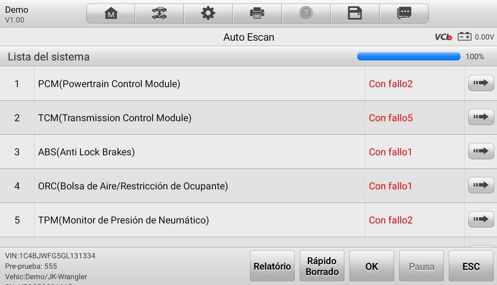
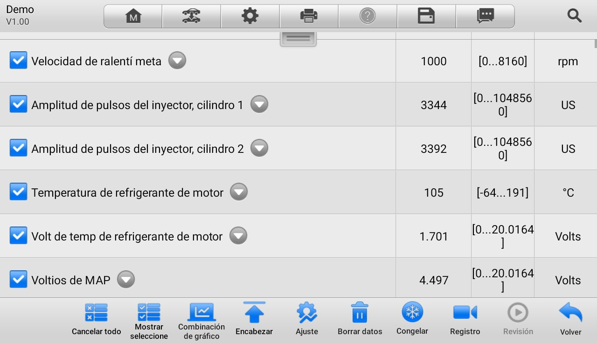
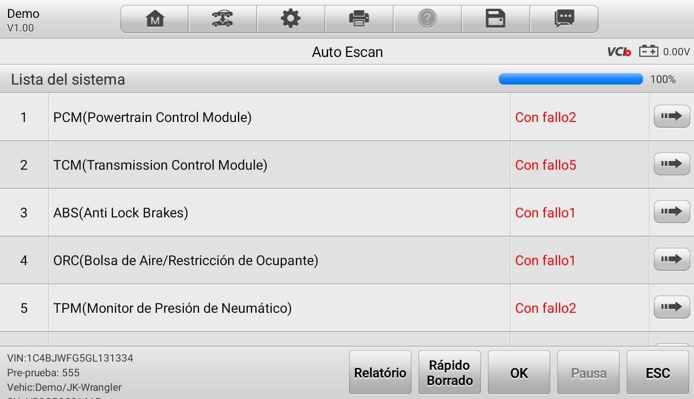
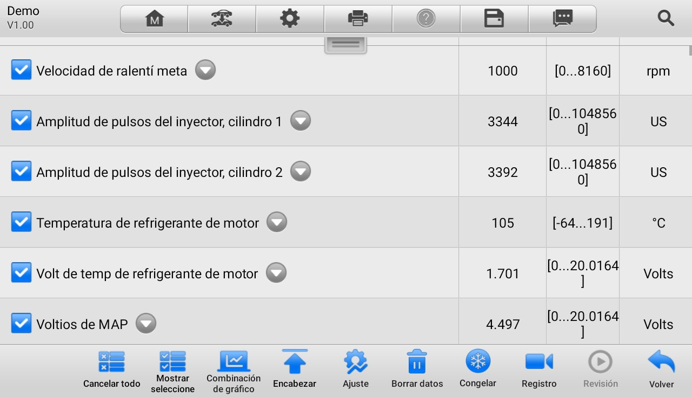

Servicios
-
Laves con chip
Se hacen duplicados de llaves con chip o se generan desde cero para la mayoría de marcas.
Solicitar servicio -
varios diseños
Generación y programación de controles remotos.
Solicitar servicio
Modernos
Cambia tu control viejo y de dos partes, por uno solo de última generación tipo navaja.
Algunos de nuestros estilos
 
Lectura y borrado de códigos DTC
Leer y eliminar códigos de falla en todos los sistemas del vehículo
Solicitar servicioDatos en vivo (Live Data)
Monitorea sensores y componentes en tiempo real a través de gráficas, valores numéricos para detectar fallas ocultas y comportamientos anormales del vehículo.
Solicitar servicio
Control bidireccional y pruebas activas
Accionar actuadores como inyectores, bombas, luces, ventanillas, climatización, frenos, ventilador, etc.
Solicitar servicioReset y mantenimiento especializado
ABS aceite, batería, calibración del acelerador, aprendizaje de cambios, codificación de inyectores y más.
Solicitar servicioImpresión Wi Fi & gestión de datos
Informe directo desde el escáner o por mensaje de texto y email.
Solicitar servicio
Somos especialistas en la programaci√≥n y duplicado de llaves automotriz. Trabajamos en [ciudad o zona, vamos hasta tu casa].‚ö°‚ö°üî•
üöÄ La más alta tecnolog√≠a para las llaves de tu auto
Con nuestras máquinas, ofrecemos cortes precisos y duplicados profesionales en segundos. ¡Velocidad, precisión y calidad garantizadas!
üõ†Ô∏è Programaci√≥n
Contamos con equipos de última generación para el programado, codificación de llaves con chip y smart key, compatible con la mayoría de marcas de vehículos.
Conoce nuestro trabajo
Fiat
Mazda 3